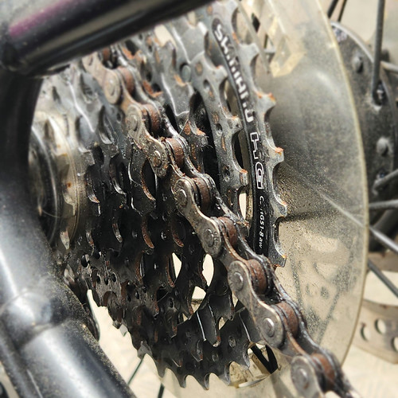
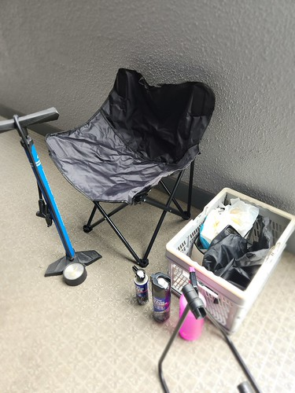
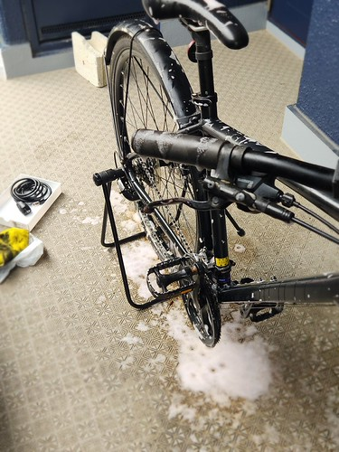
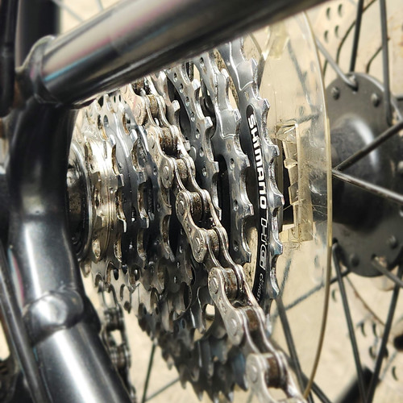
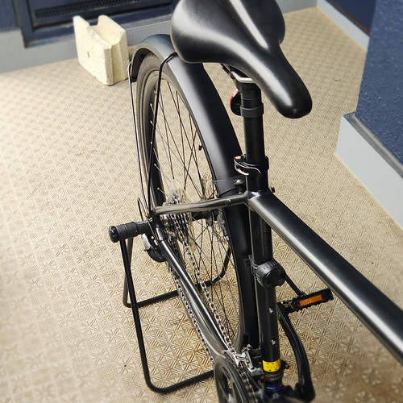
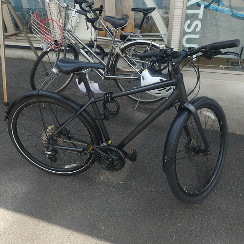
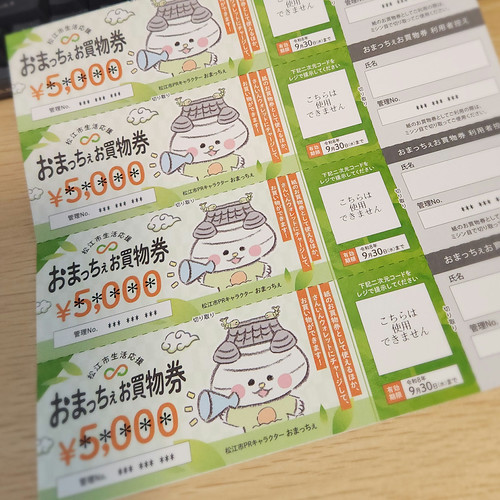

自転車をオーバーホールに出した

先日の通院で X 線検査と骨密度検査を行い，主治医から骨が完全にくっついたとお墨付きを頂いた。 埋め込んでいる金属の緩みもなく摩滅している部分もないそうな。 よしよし。
ちなみに骨密度は横ばい。 腰椎は正常範囲内だけど大腿骨がねぇ。 まぁ，薬を飲み始めてまだ半年ほどだし，そんなに急によくはならないか。
というわけで，自転車を再開すべくオーバーホールに出すことにした。
その前に掃除
骨折してからこっち，野ざらしではないけど屋外に放置してたので，チェーンはまっ茶色だし，フレーム等は黄砂などが降り積もって薄汚れてる。

そのままでは乗れないので，まずはお掃除から。

今回のために Muc-Off の洗車用洗剤を購入。 あと折りたたみ椅子も買った。 いや左脚股関節の可動範囲が狭くなって胡座がかけなくなったのよ。
まずはチェーンクリーナーでチェーンを含むドライブトレインの汚れを落とす。 チェーンが茶色かったのは錆ではなくチェーンルブが酸化してたからのようだ。 よかったよかった。
ドライブトレインの汚れを取ったら洗剤を全体にスプレーする。

これで数分置いてからウェスで拭き取っていく。 最後にチェーンルブを塗布して完了。


まぁ，乗れる程度には綺麗になったかな。 それじゃあ自転車屋さんへ Go。
オーバーホールに出した
というわけで，滞りなくオーバーホールに出してきた。

今は納品ラッシュだそうで，出来上がるまで1ヶ月ちょっとかかると言われた。 まぁ，今回は急がないから。 どのくらいかかるかなぁ。 あまり高くつかないといいなぁ。
そういえば「おまっちぇ お買物券」なるものが届いてたな1。

自転車屋さんでも使えるみたいだし，今回のこれでパーッと使っちまうか。
体力激減
自転車屋さんまで7kmほどの道のりだけど，脚力の低下を痛感する。 体幹も肩関節周りも弱ってる感じ。 持久力も落ちてるかなぁ。 左脚股関節は，最初ちょっと違和感があったけど，ペダルを漕いでるうちに気にならなくなった。
主観で3年前くらいの体力レベル。 できれば今年中に宍道湖一周に再チャレンジしたかったんだけど，ちょっと無理ぽいか。 自転車が戻ってきたら近場を走り回るところから始めるか。 年内目標を下方修正して八雲温泉くらいに設定するのがいいかもしれない。 先は長い。
参考

- シュアラスター チェーンオイル チェーンルブ[セミドライタイプ] S-146 軽いペダリング 汚れにくい 300km耐久
- シュアラスター(Surluster) (Release 2021-05-24)
- Automotive
- B091PZZ72F (ASIN), 4975203103468 (EAN)
- 評価
[Comment] 今までのが切れたので違うメーカーにしてみた。同メーカーのチェーンクリーナーとセットで購入。

- シュアラスター チェーンクリーナー チェーンクリーナー(自転車用) S-145 強力除去 完全揮発 ブラシ付き
- シュアラスター(Surluster) (Release 2021-05-24)
- Automotive
- B091PN6MNM (ASIN), 4975203103451 (EAN)
- 評価
[Comment] めがっさ落ちる。水なしで使える。同メーカーのチェーンルブとセットで購入。

- Amazonベーシック マイクロファイバー クリーニングクロス 24枚入 (400mm x 300mm) 薄手 洗車ふきとり
- Amazonベーシック(Amazon Basics) (Release 2013-09-11)
- Automotive
- B009FUF6DM (ASIN), 0885755921844 (EAN), 5050053546555 (EAN), 0841710104554 (EAN), 841710104554 (UPC), 885755921844 (UPC)
- 評価
[Comment] 自転車掃除用のウェス（waste）として購入。1枚50円程度と考えるなら百均で売ってるのと同程度の値段か？